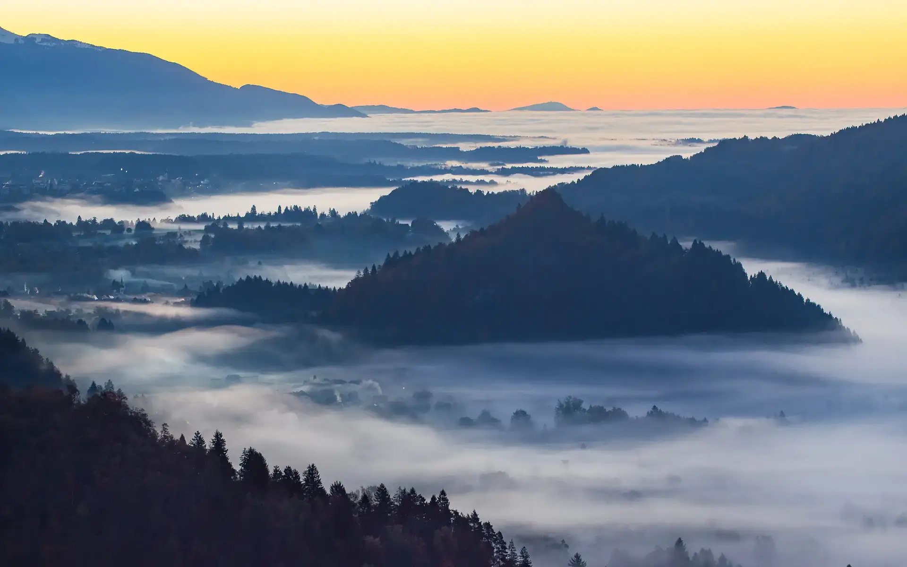
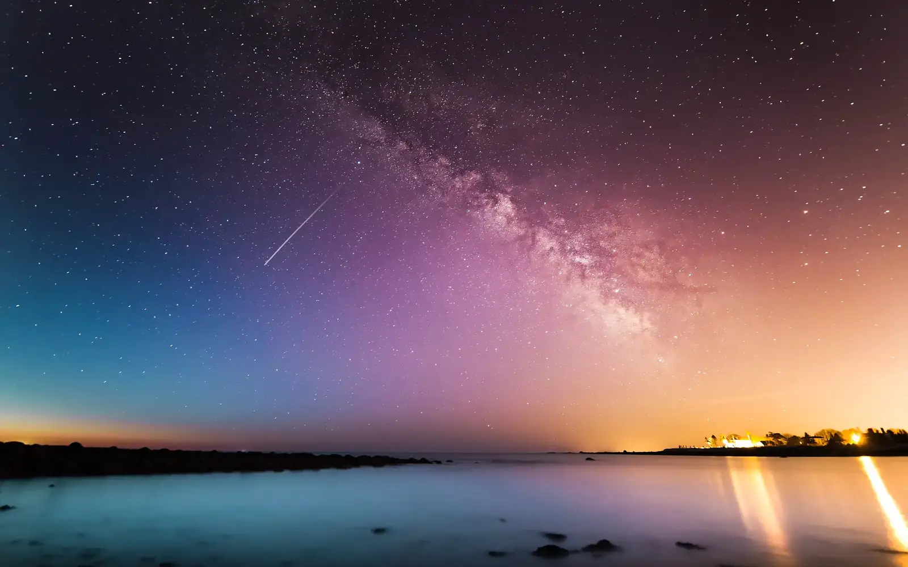

Good morningДоброе утроBună dimineața
Eye break inОтдых для глаз черезPauză pentru ochi în 19 min
Do deep work without fighting your browser.Работайте глубоко, а не боритесь с браузером.Lucrează adânc, fără să te lupți cu browserul.
Focus sessions, a gentle pause before distracting sites, honest statistics and care for your eyes. One free extension that keeps your data on your device.Фокус-сессии, мягкая пауза перед отвлекающими сайтами, честная статистика и забота о глазах. Одно бесплатное расширение, которое хранит данные у вас.Sesiuni de concentrare, o pauză blândă înainte de site-urile care distrag, statistici sincere și grijă pentru ochi. O singură extensie gratuită, care îți păstrează datele pe dispozitiv.

One click.
The noise goes quiet.Один клик —
и шум стихает.Un clic.
Zgomotul se stinge.
Start a session and distracting sites pause until the timer ends, then open again by themselves. Add five minutes when you are in the flow. Take the break when you are done.Запустите сессию — отвлекающие сайты встанут на паузу до конца таймера и сами откроются после. Добавьте пять минут, если пошло. Отдохните, когда закончите.Pornește o sesiune, iar site-urile care distrag se opresc până se termină cronometrul, apoi se deschid singure. Adaugă cinci minute când ești în ritm. Ia-ți pauza când ai terminat.
- Deep work · Sprint · StudyГлубокая работа · Спринт · УчёбаLucru adânc · Sprint · Învățat
- Strict modeСтрогий режимMod strict
- Daily goal and streakДневная цель и серияObiectiv zilnic și serie
- Alt + Shift + F
ends atдоpână la 10:25
youtube.compausedна паузеîn pauzăreddit.compausedна паузеîn pauzăx.compausedна паузеîn pauză
Held back 3 distractions todayСегодня остановлено 3 отвлеченияAzi au fost oprite 3 distrageri

A breath instead of a wall.Вдох вместо стены.O respirație în loc de zid.
When habit pulls you to a distracting site, EyeTime asks for one slow breath and shows the plan you wrote for this moment. Still need it? Continue. No guilt, no lockout.Когда привычка тянет на отвлекающий сайт, EyeTime просит один медленный вдох и показывает план, который вы сами написали на этот случай. Всё ещё нужно? Продолжайте. Без вины и без запретов.Când obișnuința te trage spre un site care distrage, EyeTime îți cere o respirație lentă și îți arată planul scris de tine pentru acest moment. Tot ai nevoie? Continuă. Fără vină, fără interdicții.
- If–then plansПланы «если — то»Planuri „dacă – atunci”
- Daily limitsДневные лимитыLimite zilnice
- Work hoursРабочие часыProgram de lucru
- Distraction budgetБюджет отвлеченийBuget de distrageri
Breathe inВдохInspiră
Do you really need youtube.com right now?Вам правда нужен youtube.com прямо сейчас?Chiar ai nevoie de youtube.com acum?

Every twenty minutes, look far away.Каждые двадцать минут смотрите вдаль.La fiecare douăzeci de minute, privește departe.
The 20-20-20 rule, counted in real, active screen time and not by the clock. A calm twenty-second break page does the rest, and a quiet reminder tells you when it is time for bed.Правило 20-20-20 по реальному активному времени у экрана, а не по часам. Спокойная страница перерыва на двадцать секунд сделает остальное, а тихое напоминание подскажет, когда пора спать.Regula 20-20-20, numărată în timp real, activ, în fața ecranului, nu după ceas. O pagină liniștită de pauză de douăzeci de secunde face restul, iar un memento discret îți spune când e ora de culcare.
Look far awayПосмотрите вдальPrivește în depărtare
Find something about six metres away and rest your gaze on it. Let your shoulders drop.Найдите что-нибудь метрах в шести и задержите на нём взгляд. Опустите плечи.Găsește ceva la vreo șase metri și odihnește-ți privirea pe el. Lasă umerii jos.

See where the day went.Увидьте, куда ушёл день.Vezi unde s-a dus ziua.
Time per site and per hour, your best focus hours, how close your estimates were, and one small idea for next week. Honest numbers, counted on your device.Время по сайтам и часам, ваши лучшие часы фокуса, точность оценок и одна небольшая идея на следующую неделю. Честные цифры, посчитанные на вашем устройстве.Timp pe site și pe oră, cele mai bune ore de concentrare, cât de aproape au fost estimările și o mică idee pentru săptămâna viitoare. Cifre sincere, calculate pe dispozitivul tău.
- Day timelineТаймлайн дняCronologia zilei
- Weekly reviewОбзор неделиRecapitulare săptămânală
- “My week” cardКарточка «Моя неделя»Cartea „Săptămâna mea”
- CSV · Markdown
ProductiveПолезноеProductivNeutralНейтральноеNeutruDistractingОтвлекающееDistrage
Make it yours.Сделайте своим.Fă-l al tău.
16 looks, any accent colour, your own fonts and 69 photo backgrounds, with a free-form editor for the new tab. Pick a look on the right: this page will follow.16 стилей, любой акцентный цвет, свои шрифты и 69 фото-фонов, плюс свободный редактор новой вкладки. Выберите стиль справа — эта страница подстроится.16 stiluri, orice culoare de accent, fonturile tale și 69 de fundaluri foto, cu un editor liber pentru fila nouă. Alege un stil în dreapta: pagina aceasta îl va urma.
- Light and darkСветлая и тёмнаяLuminos și întunecat
- 46 widgets46 виджетов46 de widgeturi
- Ambient soundsФоновые звукиSunete ambientale
- Ctrl / ⌘ K
PhotographsФотографииFotografii
A new photograph every day.Новая фотография каждый день.O fotografie nouă în fiecare zi.
69 backgrounds for your new tab, each with type that stays readable. Or put your own photo there, and let the clock stand behind the mountain.69 фонов для новой вкладки, и на каждом текст остаётся читаемым. Или поставьте свою фотографию — и пусть часы встанут за горой.69 de fundaluri pentru fila nouă, fiecare cu text care rămâne lizibil. Sau pune propria fotografie și lasă ceasul să stea în spatele muntelui.


Photographs by their authors, under the Unsplash licence or CC0. Every one is credited in the corner of the page and in the credits file.Фотографии принадлежат авторам, лицензия Unsplash или CC0. Автор каждой указан в углу страницы и в файле с благодарностями.Fotografiile aparțin autorilor lor, sub licența Unsplash sau CC0. Fiecare autor este numit în colțul paginii și în fișierul cu mulțumiri.
PrivacyПриватностьConfidențialitate
Your day stays on your device.Ваш день остаётся на вашем устройстве.Ziua ta rămâne pe dispozitivul tău.
No account, no ads. Nothing leaves your device unless you switch it on; the one optional thing is anonymous usage numbers, which you can read before they are sent.Без аккаунта и рекламы. Ничто не покидает устройство, пока вы сами этого не включите; единственное необязательное — анонимные цифры использования, которые можно прочитать до отправки.Fără cont și fără reclame. Nimic nu părăsește dispozitivul tău decât dacă activezi tu; singurul lucru opțional sunt cifrele anonime de utilizare, pe care le poți citi înainte să fie trimise.
- 01Only domains and seconds.Только домены и секунды.Doar domenii și secunde. Never full addresses, page titles or content.Никогда полные адреса, заголовки и содержимое страниц.Niciodată adrese întregi, titluri sau conținut.
- 02Readable source.Код можно читать.Cod sursă la vedere. Every line is on GitHub; each release is built twice and must match byte for byte.Каждая строка на GitHub; каждый релиз собирается дважды и обязан совпасть байт в байт.Fiecare linie este pe GitHub; fiecare versiune se construiește de două ori și trebuie să fie identică octet cu octet.
- 03Never sold.Никогда не продаём.Nu se vinde niciodată. Not used for ads or money. Made by one person.Не используется для рекламы и денег. Делает один человек.Nu se folosește pentru reclame sau bani. Făcut de o singură persoană.
Read the privacy policyПолитика приватностиPolitica de confidențialitate
FAQ
Fair questions.Честные вопросы.Întrebări firești.
Is it really free?Это правда бесплатно?Chiar este gratuit?
Yes. EyeTime is made by one person, has no paid tier and no ads. The code is public under the Functional Source License, which becomes Apache 2.0 after two years.Да. EyeTime делает один человек, платных тарифов и рекламы нет. Код открыт по Functional Source License, которая через два года становится Apache 2.0.Da. EyeTime este făcut de o singură persoană, nu are variantă plătită și nici reclame. Codul este public sub Functional Source License, care devine Apache 2.0 după doi ani.
Does it see the pages I visit?Видит ли оно страницы, которые я открываю?Vede paginile pe care le vizitez?
No. It keeps the domain name and the seconds spent there, on your device. Not the full address, not the title, nothing from the page.Нет. Хранятся имя домена и секунды на нём, на вашем устройстве. Ни полный адрес, ни заголовок, ничего со страницы.Nu. Păstrează numele domeniului și secundele petrecute acolo, pe dispozitivul tău. Nu adresa întreagă, nu titlul, nimic de pe pagină.
What are the optional anonymous numbers?Что за необязательные анонимные цифры?Ce sunt cifrele anonime opționale?
If you say yes, once a week EyeTime sends a few counts: on how many days you used it, how often you used each feature, your look and language. Never sites, tasks, notes, goals or times. It is off until you agree, you can read the exact report first, and you can stop at any time.Если вы согласитесь, раз в неделю EyeTime отправляет несколько счётчиков: в сколько дней вы им пользовались, как часто каждой функцией, ваш стиль и язык. Никогда сайты, задачи, заметки, цели или время. Пока вы не согласились, всё выключено; точный отчёт можно прочитать заранее, остановить — в любой момент.Dacă ești de acord, o dată pe săptămână EyeTime trimite câteva numărători: în câte zile l-ai folosit, cât de des ai folosit fiecare funcție, stilul și limba ta. Niciodată site-uri, sarcini, notițe, obiective sau ore. Este dezactivat până ești de acord, poți citi mai întâi raportul exact și poți opri oricând.
Which browsers does it work in?В каких браузерах работает?În ce browsere funcționează?
Chrome, Edge, Brave and Arc install it from the Chrome Web Store. For Firefox, download it from the release page on GitHub.В Chrome, Edge, Brave и Arc ставится из магазина Chrome. Для Firefox скачайте со страницы релизов на GitHub.În Chrome, Edge, Brave și Arc se instalează din Chrome Web Store. Pentru Firefox, descarc-o de pe pagina de versiuni de pe GitHub.
Will it lock me out of a site I need?Не закроет ли оно сайт, который мне нужен?Mă va bloca de la un site de care am nevoie?
Only if you ask it to. By default a distracting site gets a short pause and a “continue” button; strict sessions and hard blocks exist for the days you want them.Только если вы сами попросите. По умолчанию отвлекающий сайт получает короткую паузу и кнопку «продолжить»; строгие сессии и жёсткая блокировка есть для дней, когда они вам нужны.Doar dacă îi ceri tu. Implicit, un site care distrage primește o scurtă pauză și un buton „continuă”; sesiunile stricte și blocările ferme există pentru zilele în care le vrei.

23:30 — RestОтдыхOdihnă
Open a tab. Breathe.Откройте вкладку. Выдохните.Deschide o filă. Respiră.
No account. About a minute to set up. Edge, Brave and Arc install it from the same store.Без аккаунта. Настройка — около минуты. В Edge, Brave и Arc ставится из того же магазина.Fără cont. Cam un minut pentru configurare. În Edge, Brave și Arc se instalează din același magazin.